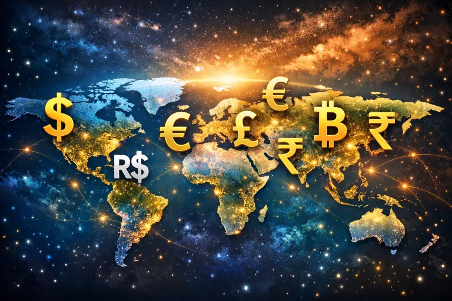
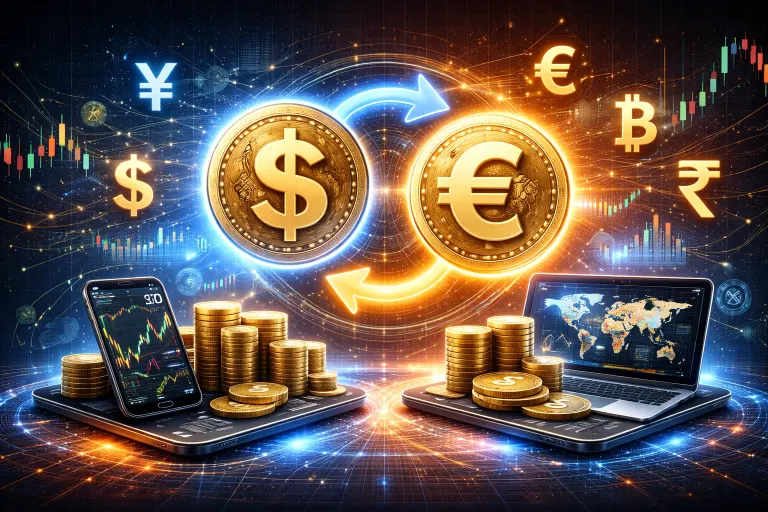
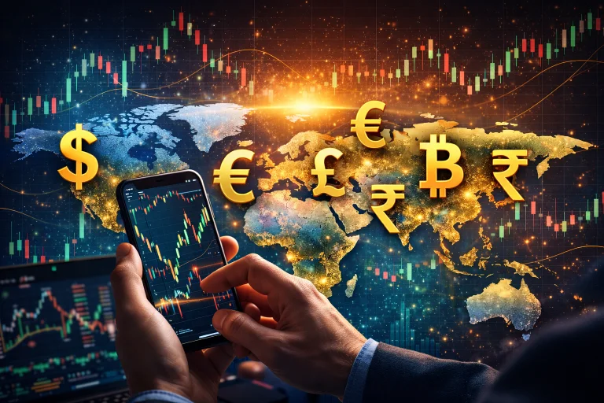
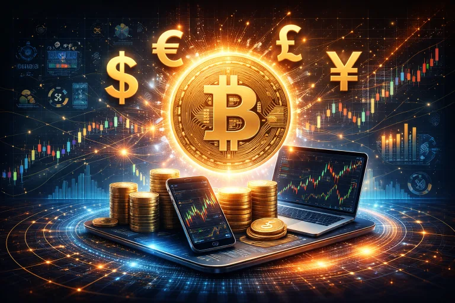
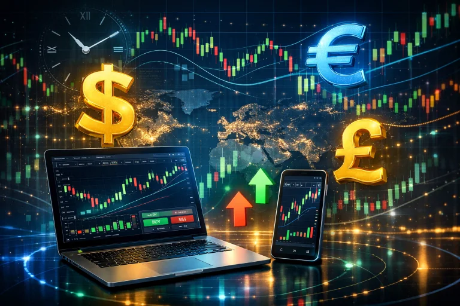

Introduction to Forex Trading Basics: A Beginner’s Guide to the World’s Largest Market
Introduction

Forex trading, also known as foreign exchange trading, is the process of buying one currency and selling another in order to make profit from price movements. It is the largest financial market in the world, bigger than stock markets, crypto markets, and commodities combined. Every single day, trillions of dollars move through the forex market as banks, governments, institutions, companies, and individual traders exchange currencies.
What makes forex special is accessibility. Unlike traditional financial markets that often require high capital, complex paperwork, or physical presence, forex can be accessed from anywhere in the world using just a phone or computer and an internet connection. This makes it one of the most powerful financial systems available to everyday people.
Forex trading is not gambling. It is not luck-based. It is a skill-based profession that involves analysis, discipline, emotional control, and strategy. Successful traders do not rely on chance — they rely on knowledge, structure, risk management, and consistent decision-making.
At its core, forex trading is simple: you predict whether one currency will go up or down compared to another. If your analysis is correct, you profit. If it is wrong, you lose. But inside this simplicity is a deep system of market psychology, global economics, technical patterns, and human behavior.
Learning forex trading is not just about making money — it is about learning how global systems work, how money flows, how markets react to fear and confidence, and how discipline can transform financial habits
Forex also builds powerful life skills: patience, delayed gratification, emotional intelligence, decision-making under pressure, and strategic thinking.
👉This is why many people say forex trading changes not only their income — but their mindset.
What Forex Really Is
Forex is the exchange of currencies between countries. For example:
- USD = United States Dollar
- EUR = Euro
- GBP = British Pound
- JPY = Japanese Yen

When you trade EUR/USD, you are trading the euro against the dollar. You are predicting whether the euro will gain strength or lose strength compared to the dollar. Every trade is based on relative value — one currency against another.
Why People Learn Forex
People learn forex trading for many reasons:
- Financial independence
- Flexible income
- Location freedom
- Skill-based income
- Scalability
- Low startup barrier
Unlike many hustles that depend on physical strength, time limits, or location, forex depends on knowledge and skill.

Reality Check
_Forex is not easy money. Forex is not instant wealth. Forex is not guaranteed income.
_It is a long-term skill. It requires learning, failure, discipline, and growth.
_Those who treat it seriously succeed. Those who chase shortcuts fail.
Why Forex Trading is One of the Most Powerful Skills You Can Learn in the Digital Age

Why Forex Trading?
In a world driven by technology, automation, and digital systems, financial skills are becoming more important than physical labor. Forex trading stands out as one of the most powerful financial skills because it allows individuals to participate directly in the global economy.
Forex is not tied to one country, one company, or one industry. It is global, decentralized, and always moving. When you learn forex, you are learning how money moves across borders, how economies interact, and how global events influence markets.
👉This makes forex more than trading — it becomes financial intelligence.
Accessibility
Forex is open to almost everyone:
- No degree required
- No office needed
- No physical shop
- No inventory
- No employees
You only need:
- Internet
- Device
- Knowledge
- Discipline
Freedom
Forex offers different types of freedom:
- Time freedom
- Location freedom
- Income scalability
- Decision freedom
You control when you trade, how you trade, and how much you risk.

Scalability
Forex income scales with skill and capital. The better you become, the more efficiently you manage money. This is not linear income. It is skill-compounded income.
Skill Ownership
Jobs can fire you. Businesses can collapse. Markets can change. 👉But a skill stays with you.
Forex is portable intelligence.
Global Market Power
Forex reacts to:
- Wars
- Elections
- Inflation
- Interest rates
- Economic policies
- Global news
👉Learning forex means learning how the world truly works financially.
Forex Brokers Explained:
The Gatekeepers of the Forex Market
A forex broker is the bridge between you and the forex market. Without a broker, you cannot access currency markets.
👉Brokers provide:
- Trading platforms
- Price feeds
- Order execution
- Liquidity access
- Account management
They are the infrastructure layer of trading.
What Brokers Actually Do
They connect your trade to liquidity providers. They execute buy/sell orders. They provide leverage. They manage spreads. They store funds.
Broker Types
- Market Makers
- ECN Brokers
- STP Brokers
Each has different execution models
What Makes a Good Broker
- Regulation
- Transparency
- Fast execution
- Low spreads
- Trust
- Good support
- Platform stability
- Platforms
Common platforms:
- MT4
- MT5
- WebTrader
- Mobile platforms
- Broker Safety
👉Remember always to look for:
- Regulation
- Reviews
- Transparency
- Withdrawal proof
-A bad broker can destroy a good trader-
Check out the two brokers i personally use and decided based on your preference
👉Go Here
Mr Right— Eugene,(GrindHub Creator)
← Back to Blogs